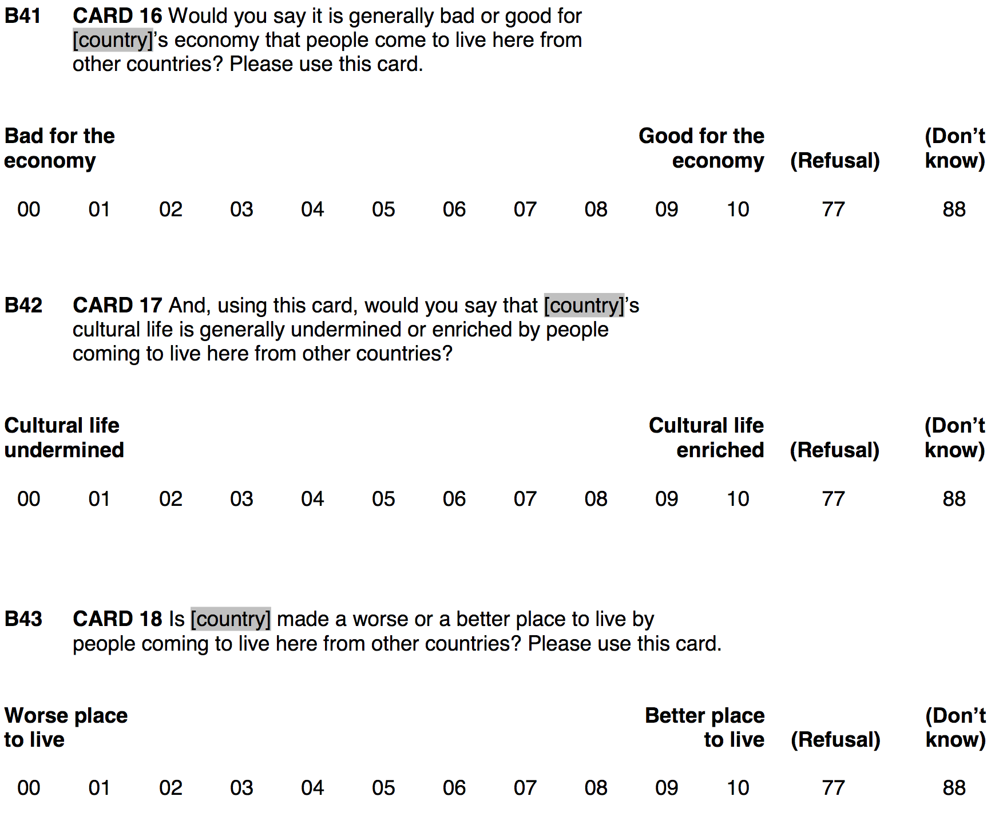
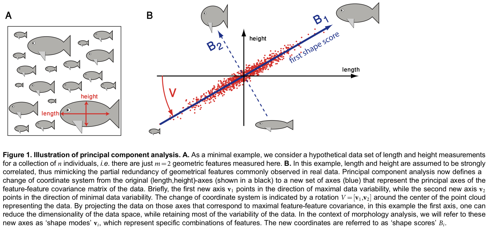
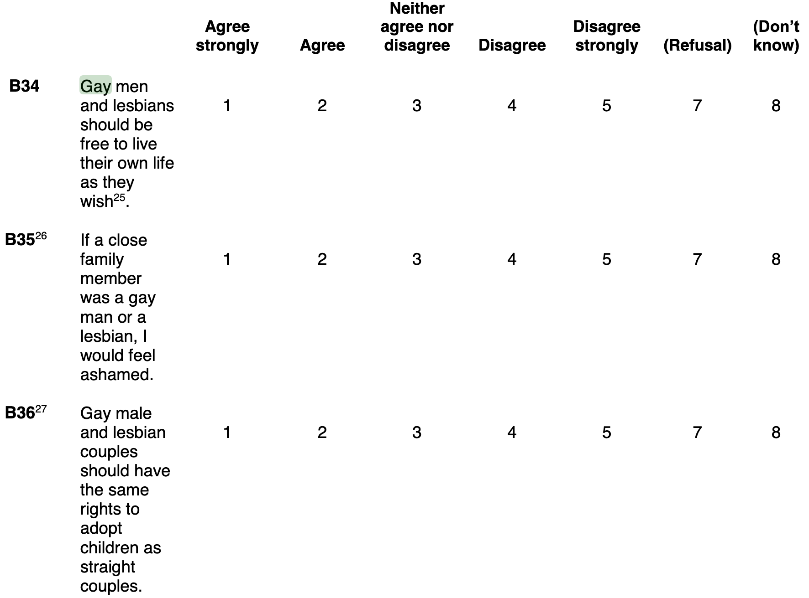

Einführung in R und Quarto
Principal Component Analysis (PCA)
Let’s get ready
Prepare the data
Scales
Do items measure an underlying “latent” concept?
First, check whether the \(k\) items correlate. ::: {.note} Maybe also use scatterplots to check whether they are linearly associated.
Second, we try to come up with a measurement model of the form:
\[y_i = \beta_{1}x_{1i} + \beta_{2}x_{2i} + ... + \beta_{k}x_{ki}\]
\(\Rightarrow\) But how to choose the \(\beta\)?
Additive scales The old-school way
Additive scales assume that all items are similarly-important indicators, that is, every \(\beta\) is set to \(\frac{1}{k}\).
:::
Additive scales
The old-school way to build a scale
Additive scales
The old-school way to build a scale
Additive scales — relation to education
Additive scales
A first problem
Take this two-variable case as example. As additive scale: \(\text{Xeno} = \frac{1}{2}*\text{imbgeco} + \frac{1}{2}*\text{imwbcnt}.\)
Additive scales
A first problem
Take this two-variable case as example. As additive scale: \(\text{Xeno} = \frac{1}{2}*\text{imbgeco} + \frac{1}{2}*\text{imwbcnt}.\)
Principal Components Analysis
Source: Pablo Martin
Principal Components Analysis
The goal

Source: Werner et al. (2014)
PCA
Intuition of the mechanics
According to PCA, it would be better to give imueclt a larger \(\beta\) than imbgeco.
The reason is that the respondents’ answers to imueclt are more varied. That is, one could argue that they contain more information!
Vice versa, variables that have mostly the same values across cases are not very informative. The key point here is: Cases are different — but variables with little variation make them look similar. PCA thus looks to emphasize variables with a lot of variation, to clarify how cases differ.
PCA
Intuition of the mechanics
Our measurement model \(y_i = \beta_{1}x_{1i} + \beta_{2}x_{2i} + ... + \beta_{k}x_{ki}\) projects the original data onto a new variable (i.e., in PCA lingo, a new coordinate-system axis, aka a principal component). But depending on how we choose the \(\beta\), many projections are possible; which one is the best?
PCA’s answer: Choose the \(\beta\) such that \(\text{Var}(y_i) \rightarrow \max\). That is, the new variable should vary as much as possible (i.e., should contain as much information as possible).

If you stare at this animation for some time, you will notice that “the maximum variance” and “the minimum error” are reached at the same time, namely when the line points to the magenta ticks […].
Source: “amoeba” on Stackexchange
PCA
Intuition of the mechanics
Our measurement model \(y_i = \beta_{1}x_{1i} + \beta_{2}x_{2i} + ... + \beta_{k}x_{ki}\) projects the original data onto a new variable (i.e., in PCA lingo, a new coordinate-system axis, aka a principal component). But depending on how we choose the \(\beta\), many projections are possible; which one is the best?
PCA’s answer: Choose the \(\beta\) such that \(\text{Var}(y_i) \rightarrow \max\). That is, the new variable should vary as much as possible (i.e., should contain as much information as possible).

By the way, you can imagine that the black line is a solid rod and each red line is a spring. The energy of the spring is proportional to its squared length (this is known in physics as the Hooke’s law), so the rod will orient itself such as to minimize the sum of these squared distances.
Source: “amoeba” on Stackexchange
Principal Components Analysis in R
A PCA produces components. You can think of them as the new variable(s), that is \(y_{i}\) of our measurement model.
PCA will produce \(k\) components, ordered by the amount of information/variation they capture.
summary()tells you the importance of the single components. In our case, PC1 has a \(\text{SD}(\text{PC1}) = 3.465\), which is higher than that of any of the single items (e.g., \(\text{SD}(\text{imueclt}) = 2.4\) ). A component that captures less info than the most informative single variable of the original data is pretty useless.The Rotation tells you the \(\beta\) for each component. \(y_i = 0.54x_{1i} + 0.63x_{2i} + 0.55x_{3i}\). Hence, you need to interpret the meaning of any component based on the \(\beta\)!
Visualize the first two PCs
to ease interpretation
Interpretation: As our first principal component increases by one, scores on imbgeco increase by roughly 1.8.
Adding a PC to your data
Our xeno_pca object also contains the projections onto the principal components for each respondent (i.e., the latent xenophobia variable).
You can add a principal component to your data (but only if you have specified
na.action = na.exclude in your prcomp()):
Additive vs. PCA scale compared
Z-standardized PCA
If you PCA items with differing scales (e.g., income, age, homophobia), you should always z-standardize! You do not want income to matter more if measured in DKK rather than Euro …
For PCA, z-standardization means that correlations between items become more important. That is, emphasis is given not to items that vary more (all have \(\text{SD} = 1\) now), but to items that correlate more with other items. This seems highly desirable!
Since all items now have \(\text{SD} = 1\), importance of any meaningful components should be > 1.
Visualize the first two PC
to ease interpretation
Interpretation: Now that we have z-standardized, interpretation is easier. As our first principal component increases by one sd, imbgeco decreases by roughly 0.8 sd (i.e., \(r = 0.8\)).
PC1/Dim1 clearly measures Xenophobia. PC2/Dim2 seems to have no clear interpretation.

PCA of xeno- and homophobia items
PCA of xeno- and homophobia items — rotation needed
Because PCA tries to maximize the variance of each component iteratively/successively, the first component contains info from xenophobia and homophobia items. Conflating both types of items, which seem to measure two theoretically-distinct concepts, maximizes the variance on the first component. Therefore the PCA cannot clearly separate the two phenomena.
A rotation of the principal components that maximizes the distinctiveness with which the different items load on the principal components would solve that problem. Such a rotation could:
- Conserve the orthogonality (i.e., uncorrelated) of the principal components:
varimax() - Allow the principal components to be oblique (i.e., correlated):
promax()
Orthogonal and oblique rotations
Principal components after rotation
New component scores after rotation
3D Density plot
Today’s (important) functions
cor(): Estimate correlations.prcomp(): Estimate principal components analysis.na.exclude(): Case-wise deletion (i.e., delete all rows with missing value on any variable).fviz_pca_var(): Visualize your PCA to ease interpretation.
Literatur
Werner, Steffen, Jochen C. Rink, Ingmar H. Riedel-Kruse, and Benjamin M. Friedrich. 2014. “Shape Mode Analysis Exposes Movement Patterns in Biology: Flagella and Flatworms as Case Studies.” PLOS ONE 9 (11): e113083. https://doi.org/10.1371/journal.pone.0113083.